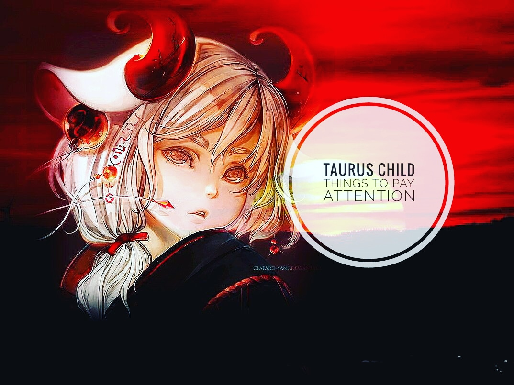
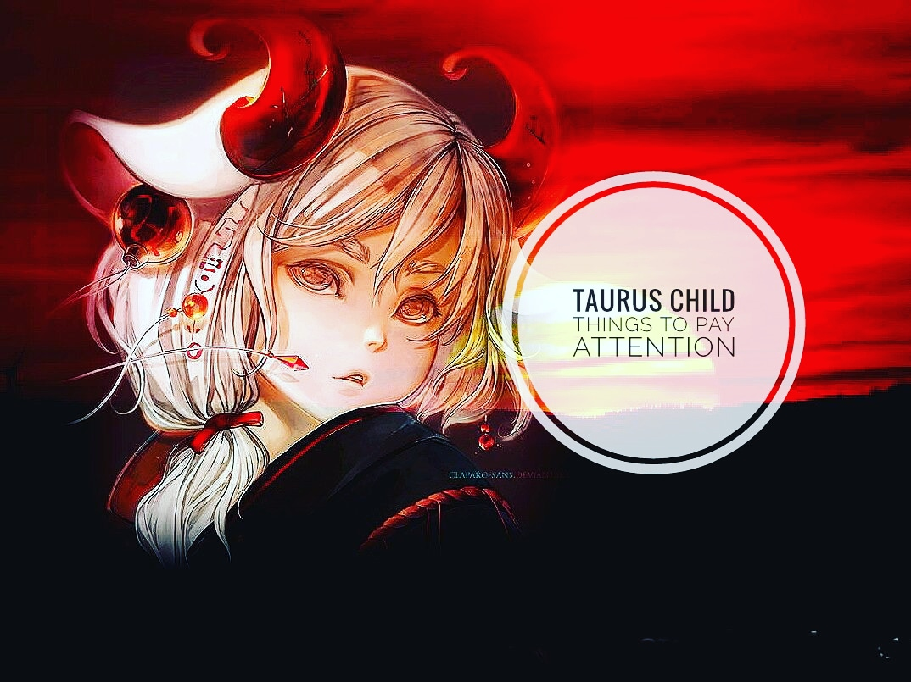

Astro blog
Astro blog
 Follow us
Follow us
 Contact us
Contact us
Raising children is a big job, no matter what your kid’s zodiac sign. It’s hard to know if you’re doing the best that you can for your kids as a parent. Astrology can help you make sense of the process and understand more about your baby, child and teen. We’ve got tips on how to bring out your child’s best traits and happiness, tailored to the personality of each zodiac sign.
Find your child's zodiac below and click on the image to discover more about their personality and get useful advice for raising your children.
 
